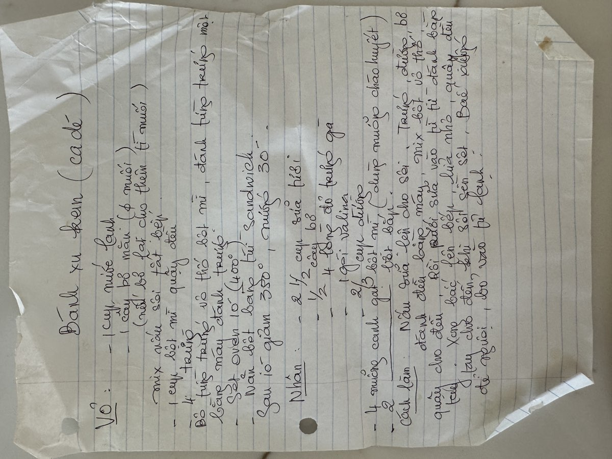

← Back to recipes
Bánh Su Kem
Cream Puffs
From Mẹ — Oanh
Nguyên liệu · Ingredients
Vỏ bánh · Choux Shell
- 1 cup water
- 1 stick (1/2 cup) butter
- 1/4 teaspoon salt
- 1 cup all-purpose flour
- 4 large eggs
Kem · Custard Filling
- 2 1/2 cups half & half
- 1 teaspoon vanilla extract
- 4 egg yolks
- 4 tablespoons sugar
- 2/3 cup all-purpose flour
- Pinch of salt
Cách làm · Instructions
Vỏ bánh · Making the Shells
- Preheat oven to 400°F (200°C). Line a baking sheet with parchment paper.
- In a medium saucepan, bring the water, butter, and salt to a rolling boil over medium-high heat. Make sure the butter is fully melted before the water boils.
- Remove from heat and add the flour all at once. Stir vigorously with a wooden spoon until the dough pulls away from the sides of the pan and forms a smooth ball.
- Return to medium heat and stir for another 1–2 minutes to dry out the dough slightly. Transfer to a mixing bowl and let cool for 5 minutes.
- Add the eggs one at a time, beating well after each addition. The dough will look like it's breaking apart — keep beating until it comes together smooth and glossy. Mẹ always said patience here is everything. The final dough should be thick enough to hold its shape but soft enough to pipe.
- Pipe or spoon mounds of dough (about 1 1/2 inches across) onto the baking sheet, spacing them 2 inches apart.
- Bake at 400°F for 15 minutes, then reduce heat to 350°F (175°C) and bake for another 15 minutes until golden brown and puffed. Do not open the oven door during the first 20 minutes or they may collapse.
- Remove from oven and poke a small hole in the bottom of each puff to release steam. Let cool completely on a wire rack.
Kem · Making the Custard
- Heat the half & half with vanilla in a saucepan over medium heat until it just begins to simmer. Do not boil.
- In a separate bowl, whisk together the egg yolks, sugar, and flour until smooth and pale.
- Slowly pour the hot half & half into the egg mixture, whisking constantly to temper the eggs — add just a little at first so the eggs don't scramble.
- Pour everything back into the saucepan and cook over medium heat, stirring constantly, until the custard thickens and begins to bubble, about 3–4 minutes.
- Remove from heat and transfer to a bowl. Press plastic wrap directly onto the surface to prevent a skin from forming. Refrigerate until completely cold.
Lắp ráp · Assembly
- Cut each puff in half horizontally, or pipe the custard through the hole in the bottom using a pastry bag fitted with a small round tip.
- Fill generously with the chilled custard. Mẹ was never stingy with the filling.
- Dust with powdered sugar if you like, and serve immediately or keep refrigerated.
Công thức gốc · Original handwritten recipe

❦
A recipe from Mẹ's kitchen